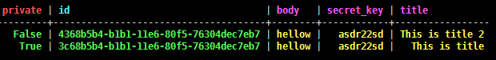
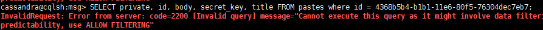

Настройка
Все основные настройки для Cassandra лежат в папке /etc/cassandra, основные из них следующие:
Логирование происходит в файл system.log, находящийся в папке /var/log/cassandra
По умолчанию Cassandra поднимает кластер с одним узлом. Если есть необходимость поднять несколько узлов, то необходимо удалить старые данные:
$ service cassandra stop
$ rm -rf /var/lib/cassandra/data/system/*
И для каждого узла настроить следующие параметры в cassandra.yaml
После всех настроек нужно возобновить работу сервера, рекомендуется поднимать сначала порождающие узлы, а затем остальные.
Проверить текущее состояние кластера и топологию сети можно командой:
$ nodetool status
Более подробно о том, как поднять несколько узлов в одном или нескольких датацентрах можно прочитать на этой странице.
Для подключения аутентификации необходимо снова остановить сервер и сделать следующие изменения в файле cassandra.yaml
authenticator: PasswordAuthenticator
При работе с cqlsh(см. далее) для первого входа необходимо использоваться пользователя cassandra и такой же пароль.
Cassandra Query Language (CQL) и командная строка cqlsh
CQL — SQL-подобный язык, адаптированный под архитектуру Cassandra. Через командную оболочку сqlsh мы можем отправлять команды CQL к Cassandra. Если вы предпочитаете работать с графическим редактором, то можете использовать DataStax DevCenter.
В качестве демонстрации основных команд CQL создадим небольшую таблицу на кластере с одним узлом (этот кластер поднимается автоматически при первом запуске).
Запускаем командную оболочку cqlsh:
$ cqlsh
Первое, что нам необходимо сделать, - это создать KEYSPACE - своего рода аналог базы данных.
> CREATE KEYSPACE IF NOT EXISTS msg WITH REPLICATION = { 'class' : 'SimpleStrategy', 'replication_factor' : 3 };
Здесь SimpleStrategy определяет используемый класс для стратегии репликации, а replication_factor — количество репликаций. Более подробно о параметрах команды CREATE KEYSPACE и настройках репликации в Cassandra можно прочитать на этой странице.
Далее переходим к работе с созданным пространством ключей:
> use msg;
И создаем в нем таблицу pastes
> CREATE TABLE IF NOT EXISTS pastes (
id timeuuid,
title text,
private boolean,
body text,
secret_key text,
PRIMARY KEY (private, id)
) WITH default_time_to_live = 120 and CLUSTERING ORDER BY (id DESC);
Останавливаться на типах данных в CQL мы не будем, так как тут большая схожесть с SQL. Интересен здесь первичный ключ и все, что идет после конструкции WITH.
Первичный ключи состоит из распределительного и кластерного ключа. Распределительный ключ отвечает за распределение данных по узлам, а кластерный за группировку данных внутри узла. Ключи сами по себе могут быть составными.
Этап проектирования первичного ключа является самым важным, так как от этого напрямую зависит вся эффективность системы.
Конструкция time_to_live позволяет задавать время жизни записи в секундах, а CLUSTERING ORDER определяет сортировку данных.
Теперь добавим несколько записей в нашу таблицу
> INSERT INTO pastes (private, id, body, secret_key, title) VALUES (true,3c68b5b4-b1b1-11e6-80f5-76304dec7eb7,'hellow','asdr22sd','This is title');
> INSERT INTO pastes (private, id, body, secret_key, title) VALUES (true,3c68b5b4-b1b1-11e6-80f5-76304dec7eb7,'hellow','asdr22sd','This is title');
И выполним выборку данных:
> SELECT private, id, body, secret_key, title FROM pastes

В полученном результате редактор зеленым выделяет распределенный и кластерный ключ, все остальные поля — желтым.
Для фильтрации запросов используется аналогичная в SQL конструкция WHERE. Отличие заключается в том, что в данной конструкции необходимо сначала указывать ограничение по распределенному ключу, затем по кластерным и только потом — по обычным полям. Например, мы можем выполнить:
> SELECT private, id, body, secret_key, title FROM pastes where private = true and id = 4368b5b4-b1b1-11e6-80f5-76304dec7eb7;
Но если мы будем фильтровать только по id, то запрос упадет с ошибкой:
> SELECT private, id, body, secret_key, title FROM pastes where id = 4368b5b4-b1b1-11e6-80f5-76304dec7eb7;

Более подробную информация о всех командах CQL можно почерпнуть здесь.
Заключение
В данной статье мы рассмотрели как установить и настроить Cassandra, а также поверхностно познакомились с языком запросов CQL.